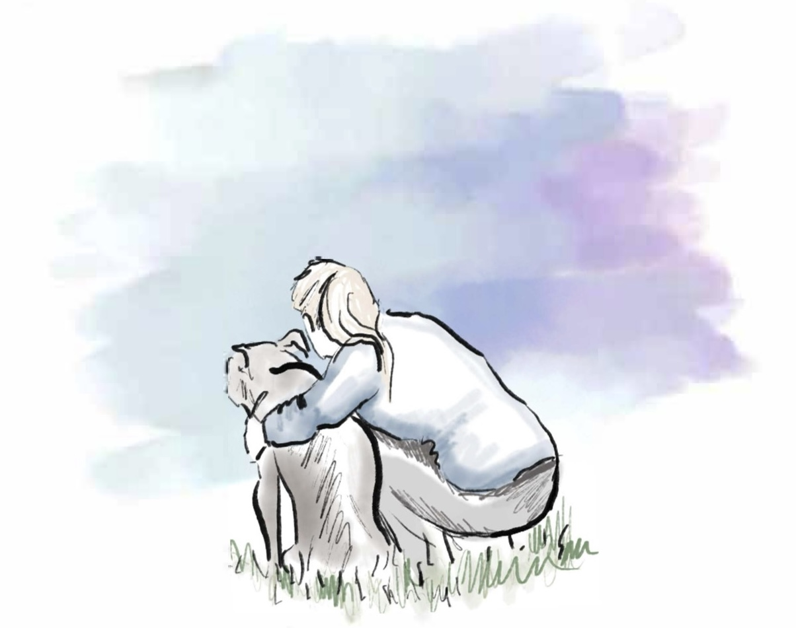

The Sugar Face is a comprehensive guide to understanding a senior dog’s physical, psychological, and emotional needs, and addresses how to enrich a dog’s quality of life late into their years.
When we’d take Mae for a stroll in her wagon, strangers would occasionally stop to ask how old she was, and when I’d proudly reply “16!”, I’d sometimes get a response of “Aww, poor old girl.” Others would tell me “Oh, it can be so hard to say goodbye” or “You do know, you’ll have to say goodbye someday, right?”
What else should I have expected to hear from those who did not know us - members of a society that so commonly state that a dog “died of old age.”
On average, only 25% of senior dogs who enter the shelter system will ever be adopted. Yet every year, countless senior dogs are surrendered. Others are euthanized or live out their final years in neglect, detachment, or isolation because their handlers do not know how to accommodate their best friend’s changing needs or enjoyment of their golden years.
Old age is NOT a disease, and no living organism dies of old age. Old age is not something that can be cured, nor is it something that needs to be cured - It is a part of life. It is beautiful and it should be celebrated - an old dog is and should be too.
There’s no such thing as “just a dog” and in their final years, our best friend may need us more than ever. But being able to be there for them is a privilege, not a burden, and the memories made together in these later years are truly precious.

TheSugarFace.com is a participant in the Amazon Services LLC Associates Program, an affiliate advertising program designed to provide a means for sites to earn advertising fees by advertising and linking to Amazon.com.